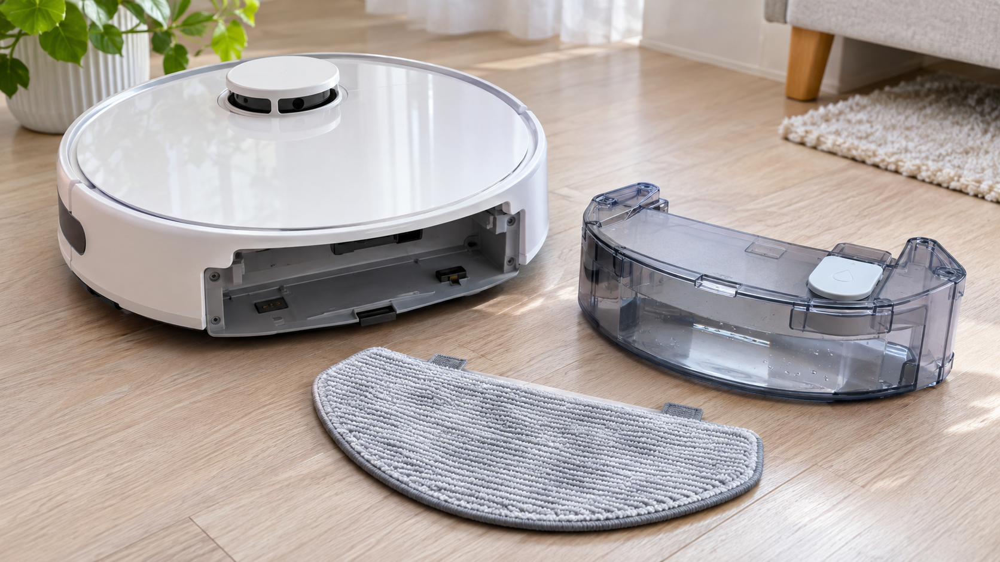

로봇청소기 물걸레가 마른 채로 움직이면 앱의 물 공급 설정, 물통 체결, 분사구 막힘, 걸레 장착을 순서대로 확인하세요. 전자식 물통에 세제나 뜨거운 물을 넣으면 밸브와 펌프가 손상될 수 있습니다.
바늘로 분사구를 깊게 뚫거나, 세제·식초·향료를 물통에 넣거나, 충전대 근처에서 누수 상태로 시험하지 마세요.
물통 인식 오류, 본체 내부 누수, 펌프 소리만 나고 급수되지 않는 증상이 반복되면 모델명과 앱 오류를 기록해 점검받으세요. 충전 불량 해결법과 브러시 불량 점검법도 참고하세요.
허용 세정제와 물통 세척법은 해당 모델의 제조사 설명서를 우선 확인하세요.